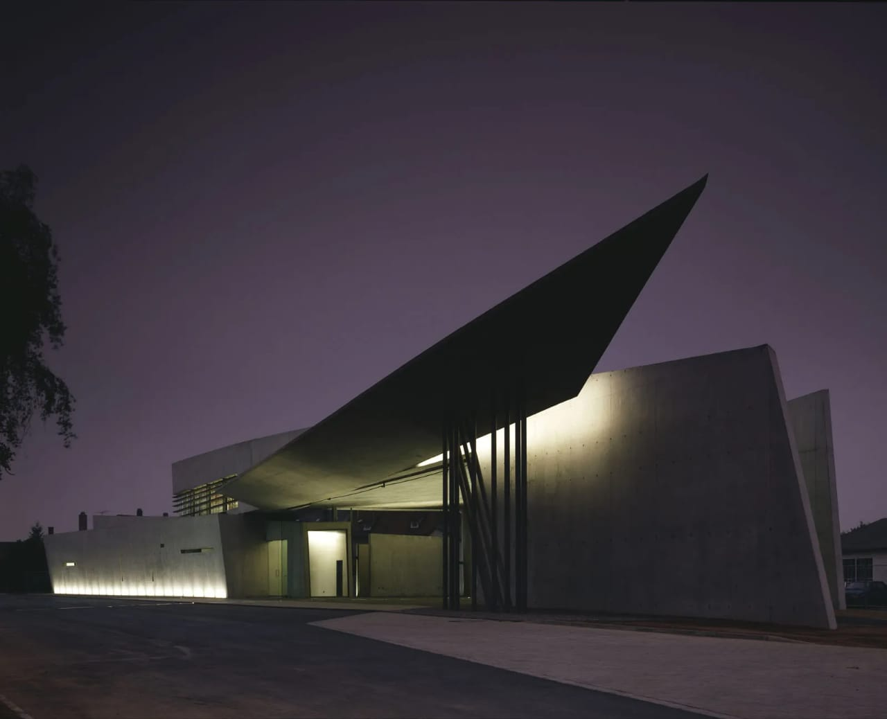
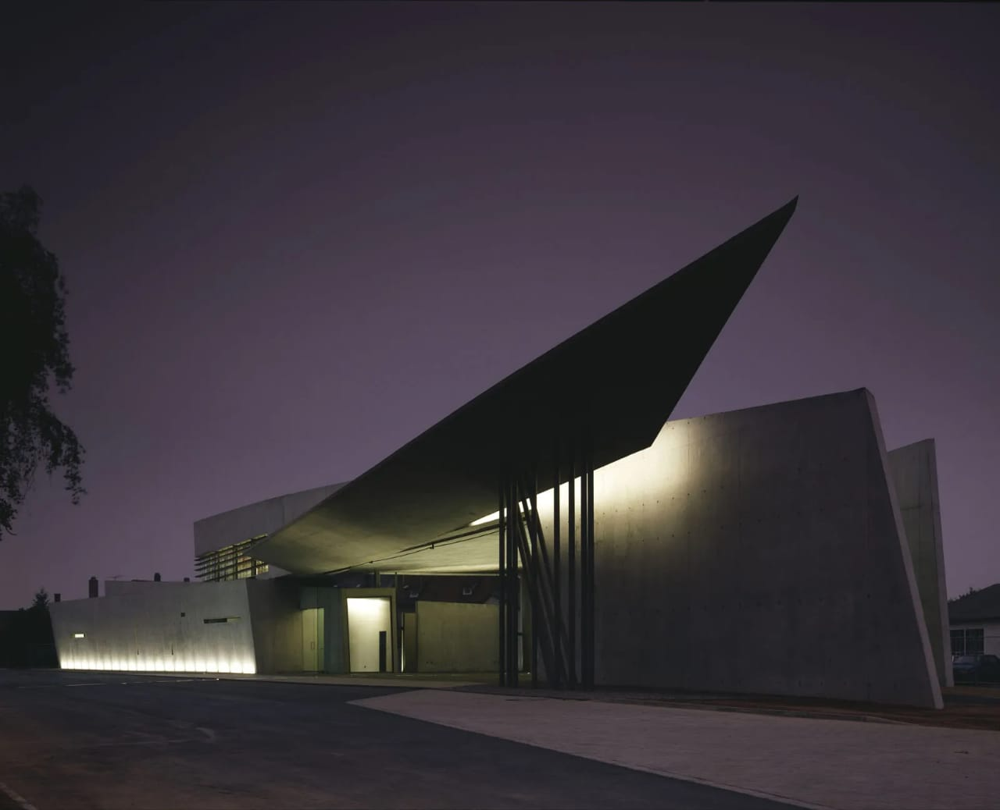
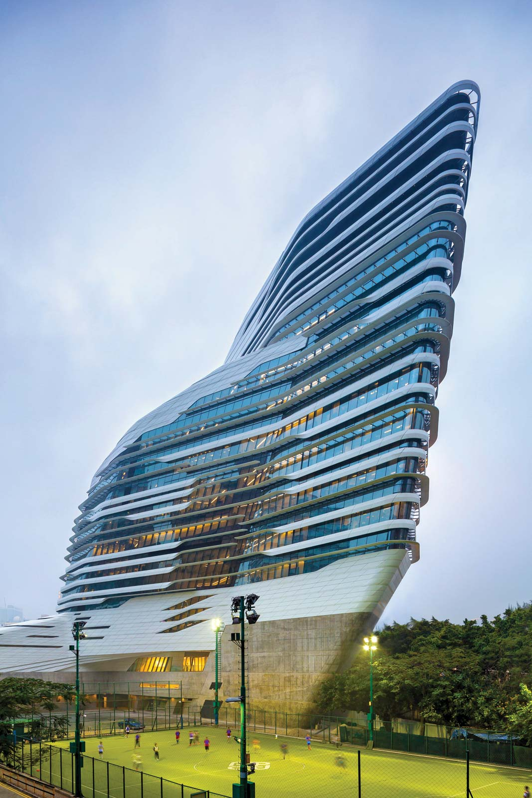
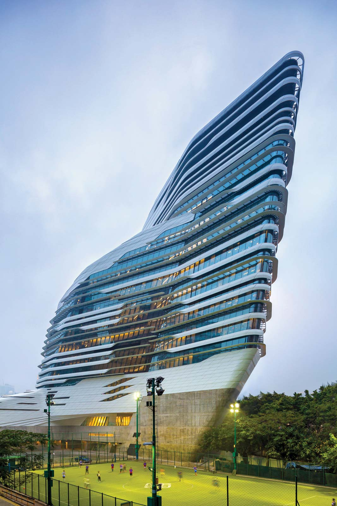
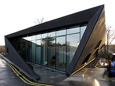

| Bio_Data | |
| Personal Details:- | |
| Name | :- Zaha Hadid |
| Born | :- 31 October 1950 |
| Died | :-31 March 2016 (aged 65) |
| Nationality | :- Iraq,United Kingdom |
| Occupation | :- Architect |
Early life &career
Hadid began her studies at the American University in Beirut, Lebanon, receiving a bachelor’s degree in mathematics. In 1972 she traveled to London to study at the Architectural Association, a major centre of progressive architectural thought during the 1970s. There she met the architects Elia Zenghelis and Rem Koolhaas, with whom she would collaborate as a partner at the Office of Metropolitan Architecture. Hadid established her own London-based firm, Zaha Hadid Architects (ZHA), in 1979.
First Build Projects
Hadid’s first major built project was the Vitra Fire Station (1989–93) in Weil am Rhein, Germany. Composed of a series of sharply angled planes, the structure resembles a bird in flight. Her other built works from this period included a housing project for IBA Housing (1989–93) in Berlin, the Mind Zone exhibition space (1999) at the Millennium Dome in Greenwich, London, and the Land Formation One exhibition space (1997–99) in Weil am Rhein. In all these projects, Hadid further explored her interest in creating interconnecting spaces and a dynamic sculptural form of architecture.


Hadid solidified her reputation as an architect of built works in 2000, when work began on her design for a new Lois & Richard Rosenthal Center for Contemporary Art in Cincinnati, Ohio. The 85,000-square-foot (7,900-square-metre) centre, which opened in 2003, was the first American museum designed by a woman. Essentially a vertical series of cubes and voids, the museum is located in the middle of Cincinnati’s downtown area. The side that faces the street has a translucent glass facade that invites passersby to look in on the workings of the museum and thereby contradicts the notion of the museum as an uninviting or remote space. The building’s plan gently curves upward after the visitor enters the building; Hadid said she hoped this would create an “urban carpet” that welcomes people into the museum.
Stardom and controversies
In 2010 Hadid’s boldly imaginative design for the MAXXI museum of contemporary art and architecture in Rome earned her the Royal Institute of British Architects (RIBA) Stirling Prize for the best building by a British architect completed in the past year. She won a second Stirling Prize the following year for a sleek structure she conceived for Evelyn Grace Academy, a secondary school in London. Hadid’s fluid undulating design for the Heydar Aliyev Center, a cultural centre that opened in 2012 in Baku, Azerbaijan, won the London Design Museum’s Design of the Year in 2014. She was the first woman to earn that award—which judges designs in architecture, furniture, fashion, graphics, product, and transportation—and the design was the first from the architecture category. Her other notable works included the London Aquatics Centre built for the 2012 Olympics; the Eli and Edythe Broad Art Museum, which opened in 2012 at Michigan State University in East Lansing, Michigan; and the Jockey Club Innovation Tower (2014) for the Hong Kong Polytechnic University.


Hadid’s extraordinary accomplishments were all the more remarkable considering she was working in an industry largely dominated by men. Her supporters contended that she was often subjected to controversies that her male counterparts were not. Her fantastic forms were often derided, and the expense and scale of many of her commissions were frequently ridiculed. Indeed, the problematic site for the London Aquatics Centre forced Hadid to scale back her design, while mounting protests, notably from preeminent Japanese architects, led her to scrap her plan altogether for the New National Stadium for the 2020 Olympics in Tokyo (the Olympics were later postponed because of the coronavirus pandemic). Further controversy followed after a 2014 report disclosed that some 1,000 foreign workers had died because of poor working conditions across construction sites in Qatar, where her Al Wakrah Stadium for the 2022 World Cup was set to break ground. When asked about the deaths, Hadid objected to her responsibility as an architect to ensure safe working conditions, and her remarks were widely regarded as insensitive. An architecture critic of The New York Review of Books exacerbated the situation when he falsely claimed that 1,000 had died building her stadium, which had yet to break ground. Hadid filed a defamation lawsuit against the critic and publication. She later settled, accepting an apology and donating the undisclosed sum to a charity protecting labour rights
Other projects and notable awards
Hadid taught architecture at many places, including the Architectural Association, Harvard University, the University of Chicago, and Yale University. She also designed furniture, jewelry, footwear, bags, interior spaces such as restaurants, and stage sets, notably for the 2014 Los Angeles Philharmonic production of Wolfgang Amadeus Mozart’s Così fan tutte.
At her sudden death from a heart attack while being treated for bronchitis in 2016, Hadid left 36 unfinished projects, including the 2022 World Cup stadium, the Antwerp Port House (2016), and the King Abdullah Petroleum Studies and Research Center (2017; KAPSARC) in Riyadh, Saudi Arabia. Her business partner, Patrik Schumacher, assumed leadership of her firm, assuring the completion of existing commissions and the procurement of new ones.
In addition to the Pritzker Prize and the Stirling Prize, her numerous awards included the Japan Art Association’s Praemium Imperiale prize for architecture (2009) and the Royal Gold Medal for Architecture (2016), RIBA’s highest honour. Hadid was a member of the Encyclopædia Britannica Editorial Board of Advisors (2005–06). In 2012 she was made a Dame Commander of the Order of the British Empire (DBE).
Works Of Zaha Hadid:-

Maggie center
providing a haven for cancer patients